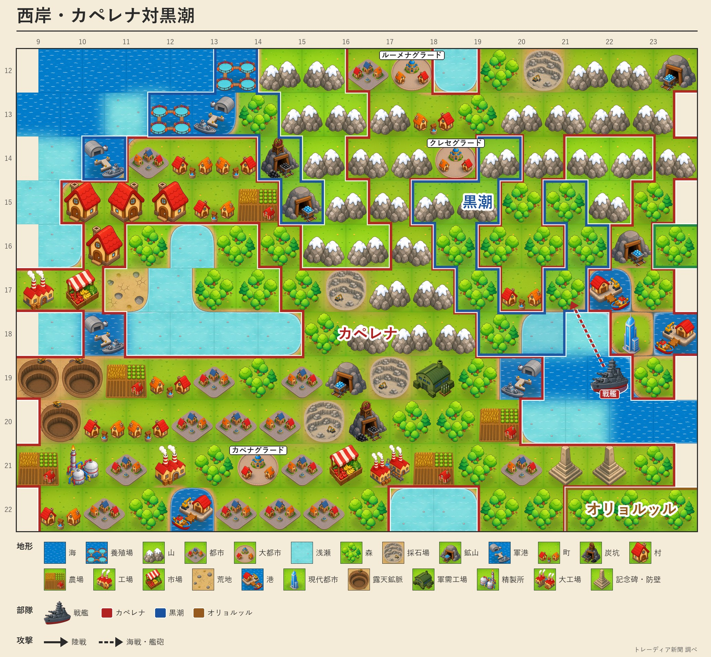
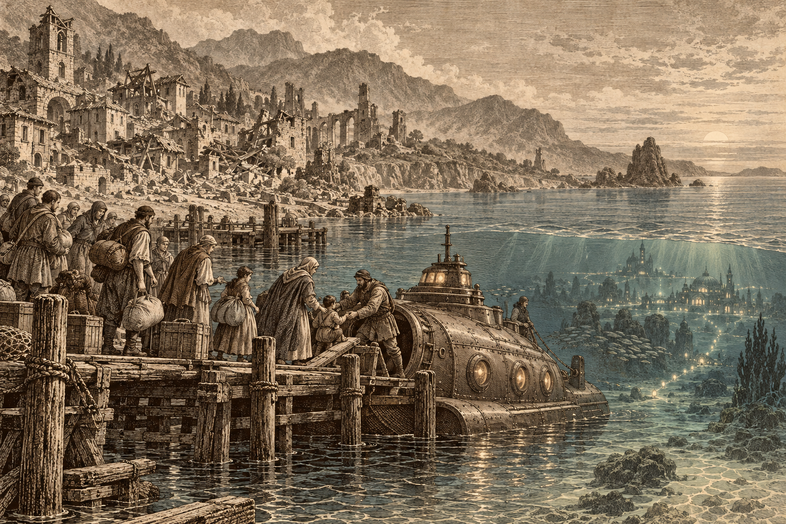

黒潮、地上の全都市を失う
首都を海底都市へ移す
カペレナに兵站基地と村を奪われ、地上の都はついに尽きた 政府は海の底へ都を移し、なお抗戦

【総合部】黒潮自治国が第159期、地上の都市をすべて失った。カペレナ王国が黒潮の兵站基地を占領し、予備兵一千人が投降し、残る村も奪った。本紙が各国の都市を照らし合わせたところ、地上に首都も都市も持たない国は、諸国のなかで黒潮ただ一つとなった。第一〇〇期から続くカペレナとの戦いは、黒潮から地上の居場所を奪い尽くした。
だが黒潮は消えていない。政府は今期、海の底に計画都市を築き、首都の機能を海底都市へ移した。人口は二万四千。地上を追われてなお、海の底に都を置いて国の体裁を保つ。潮見玄吾議長は海底の都から演説し、徹底抗戦の構えを崩さなかった。議長の演説と海底遷都の詳報は5面、西岸の戦況は4面。

帝国、人口千三百人に
アルガリスト帝国は泰平天国に兵站基地を奪われ、予備兵一千人が投降した。人口は千三百人まで減り、領土は五区画。首都アルガリストはなお残るが、国を支える力はほぼ尽きた。詳報は3面。
銀嶺、チェスと開戦
銀嶺侯国が第159期、チェス＝シロバキア共和国との戦争に入った。チェスの交戦国は白波王国と銀嶺の二つになった。金野・灰岩の開戦も控え、さらに狐っ娘の尻尾教団が灰岩へ宣戦するなど、各地で新たな戦端が開きつつある。詳報は2面。